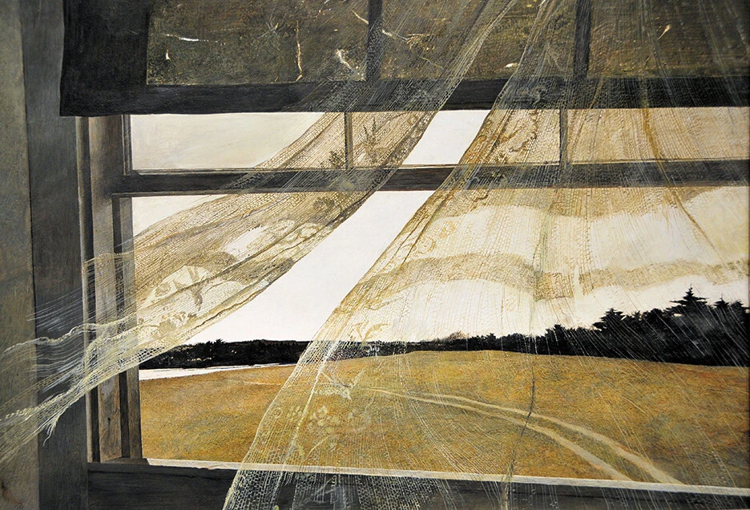
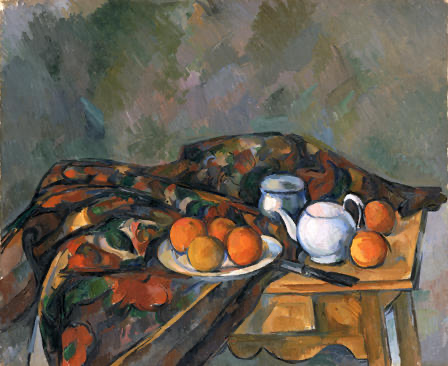
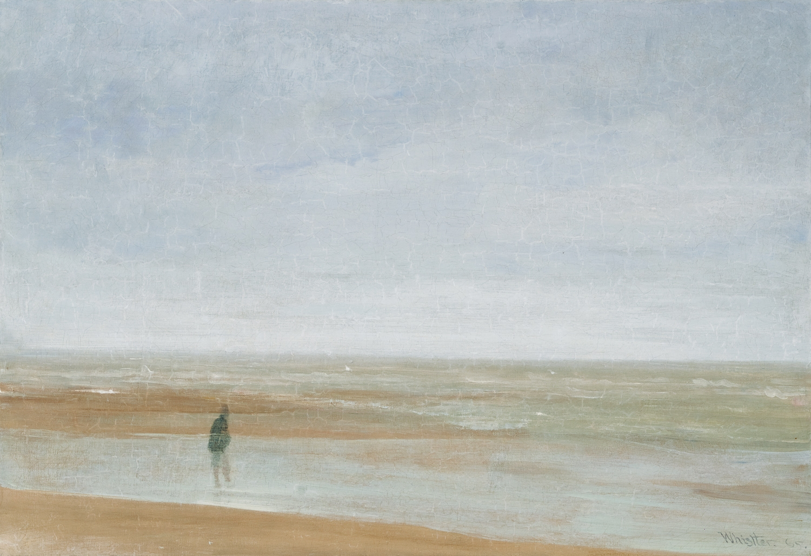
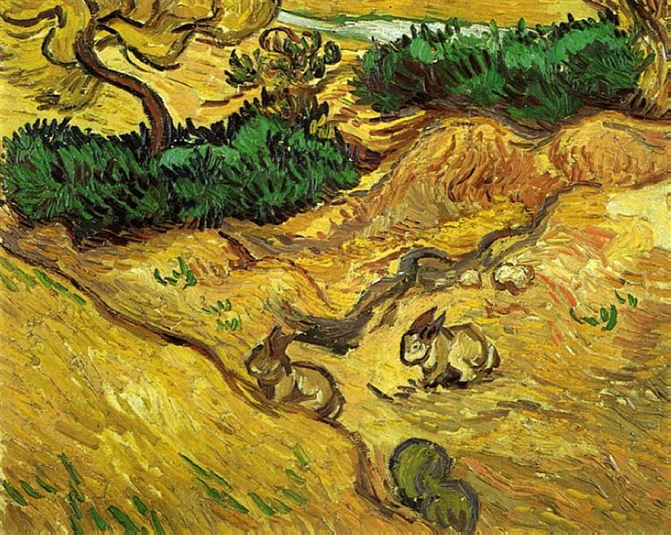
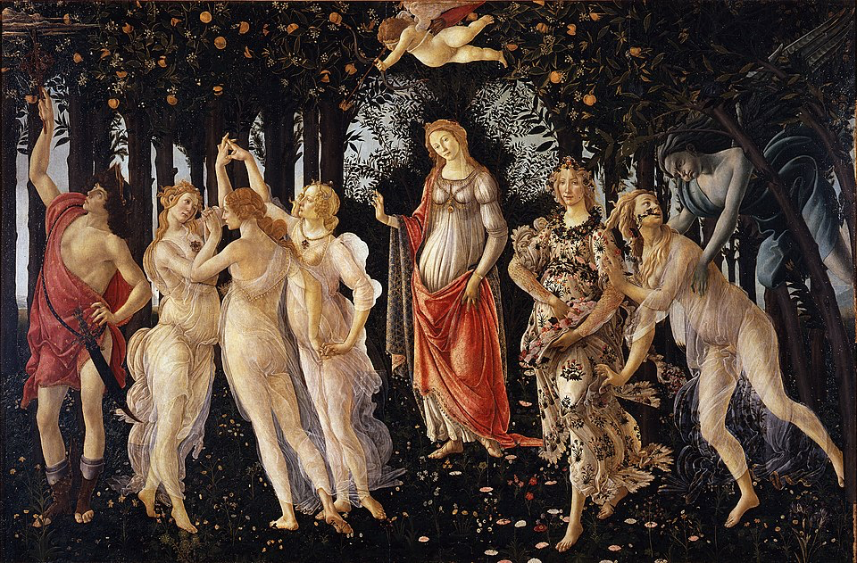
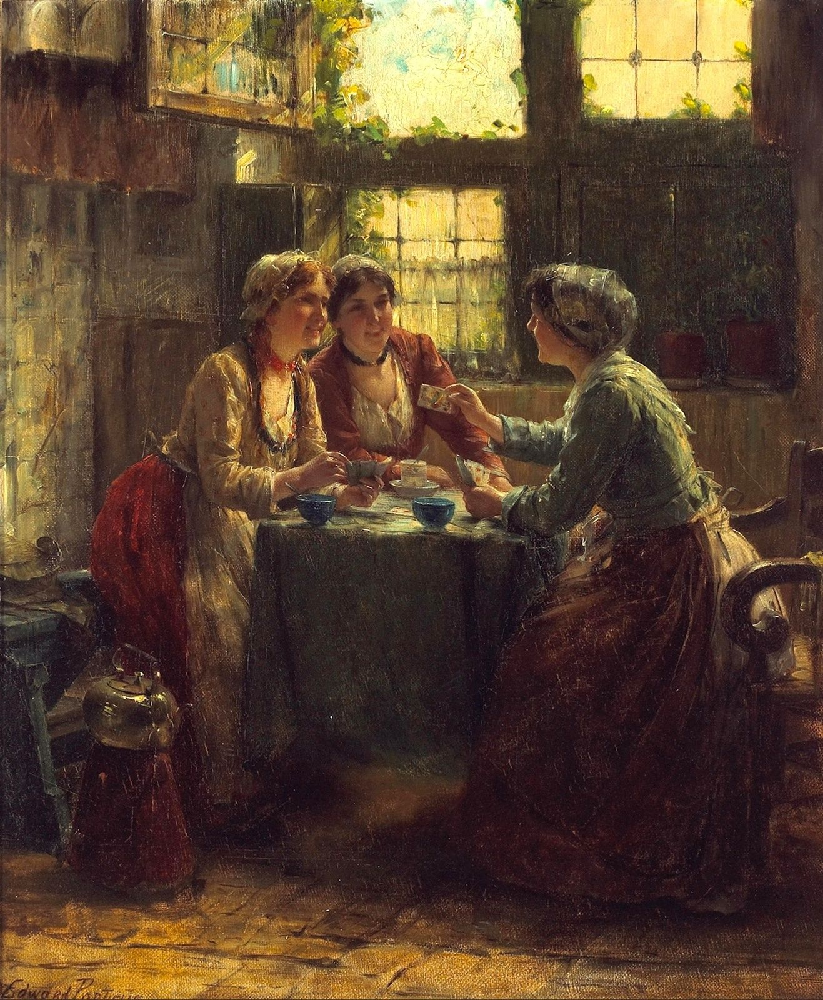
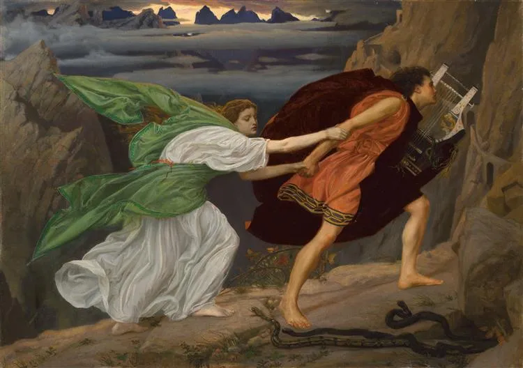
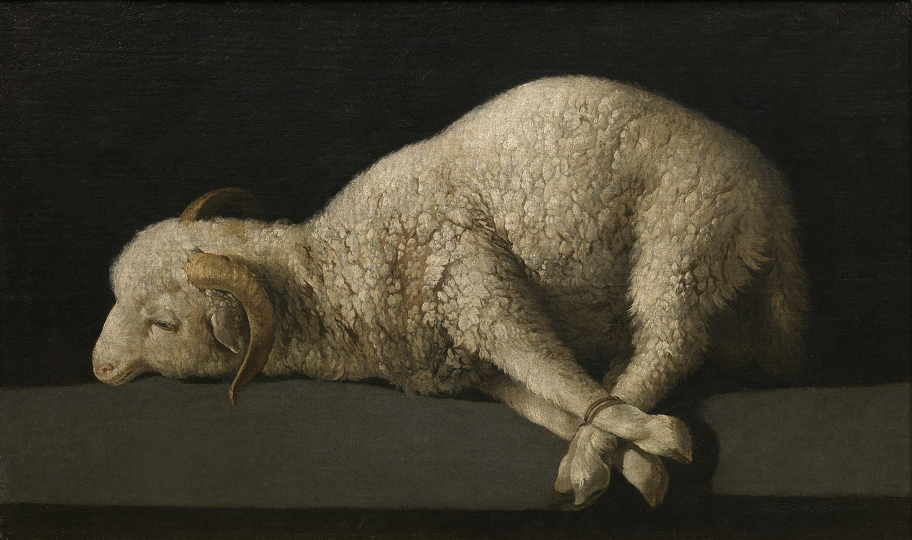
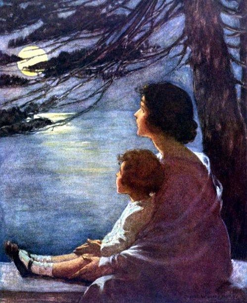

13 november 2026
a little day left
dear you,
for a long time, even after the door closed,
i left the hall light on.
i knew how much the wood would give in the wind,
how to put my palm against it
and feel the weather on the other side.

13 november 2026
dear you,
for a long time, even after the door closed,
i left the hall light on.
i knew how much the wood would give in the wind,
how to put my palm against it
and feel the weather on the other side.

2 October 2026
dear you,
i had not known how far into another person
a life could lean.
even the unnamed things in me
turned towards you,
like roots finding water
beneath a house.
you said you felt it.
i believe you.

2 June 2026
dear you,
i have been standing in the doorway again.
not leaving, not arriving.
just watching the light change
on the kitchen floor,
trying to remember what i came in for.

12 April 2026
dear you,
the night leans close.
quiet and immeasurable,
a dark canvas holding its weight.
i feel the vastness of it all
and think of you.

18 January 2026
dear you,
i carry all i’ve been,
like a shawl unfolded slowly from the back of a forgotten chair,
its edges worn thin by seasons i survived without naming
still holding the warmth of old weather
of storms that passed through me
and left without asking.

3 November 2025
dear you,
the city hums.
it’s a low, constant pulse:
a heart that doesn’t know how to rest.
no one is waiting for me.
so beneath its rhythm, i walk.

17 September 2025
dear you,
the kettle sighs first,
more awake than the day itself.
a soft exhale against the chill,
steam curls upward.

6 September 2025
dear you,
you throw the lifeboat
but i am too far to reach
not quite stranded,
but not quite saved.

7 August 2025
dear you,
we meet in the half-light,
where hesitation wears perfume:
subtle, deliberate, impossible to place.
curiosity hums under the skin,
like a pull beneath the surface
before the tide begins to shift.

21 July 2025
dear you,
once, i built a life like a hush
gathering at the edge of thunder.
and i loved you the way that silence
loves a clock:
for its ticking, not its truth.

28 June 2025
dear you,
you watch the branches move without wind,
as if memory alone could bend
what time was meant to still.
or maybe it’s just the chill
of not saying what you ought.

16 June 2025
dear you,
evening slips its fingers through lichen and wire,
slow as a thought you can’t quite name
brushing the edges of everything you desire,
but don’t dare reach for.

5 May 2025
dear you,
the sky wants you to taste, not devour
that defiant heat of the sun
spilled soft on hedgerows, slow to come

22 February 2025
dear you,
the sun pulls the pen from my pocket and encourages me to write something, anything, down. things have changed since last we spoke; i live in a newer, bigger place, i’ll never return to my childhood home, i’m softer…

18 June 2024
dear you,
i am tethered to the loneliness i wandered through as a child. learning new ways to play alone, how to grow up all by myself. i wished for hand-me-downs and someone on the other side of the seesaw. sometimes i think…

30 May 2024
dear you,
i watch the reflection of the car in the windows as we drive home, and try so hard to commit these scenes to memory. every laugh, every worry. it feels as though we have not had enough time. they sing songs we’ve heard…

24 April 2024
dear you,
something is ending soon. a chapter is closing, the credits are rolling. i find inevitability’s hands around my throat, the silent herald of the impending conclusion. i know i can no longer delay the feeling – there is…

26 March 2024
dear you,
i watch the tapestry of our existence grow and grow, until we are the universe. in this abyss, we lose ourselves, consumed by the depths of our own creation. we are young, and the threads of our destinies are laced with…

1 March 2024
dear you,
spring brings her flowers to my door, arms full of daffodils and new life. her cheeks are flushed with the footnotes of winter. i am told to follow and i cannot disobey: she pulls me into thoughts of what comes next. i…

18 February 2024
dear you,
she calls me once more to tell me that she’s speaking to him again. it’s almost as if she languishes in his coldness, the distant way he looks at her. i tell her, as i always do, to put him behind her. to enjoy some…

5 February 2024
dear you,
i don’t see them as often as i used to. i am greeted with comfort, with arms wrapped around my sides. there is a constant air of laughter in the corner of our smiles when we are in one another’s company. we discuss…

26 January 2024
dear you,
there are polar bears on my pajamas and i know i am home. the desk i have worked at for years has the same line up of books as it has done for a long time, with the occasional addition. fairy lights are still attached…